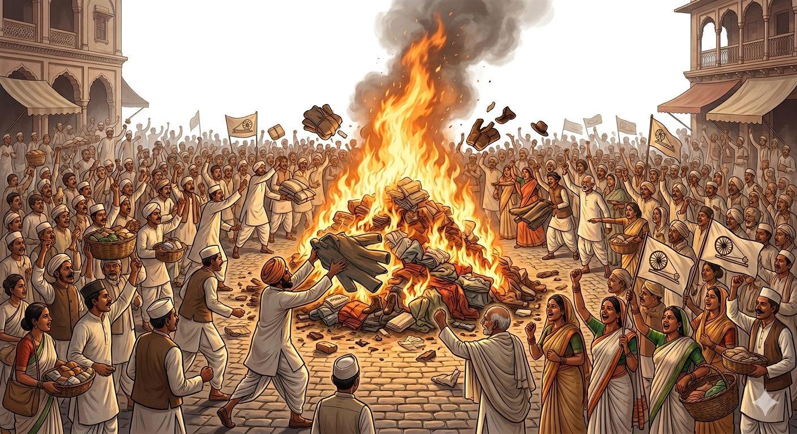
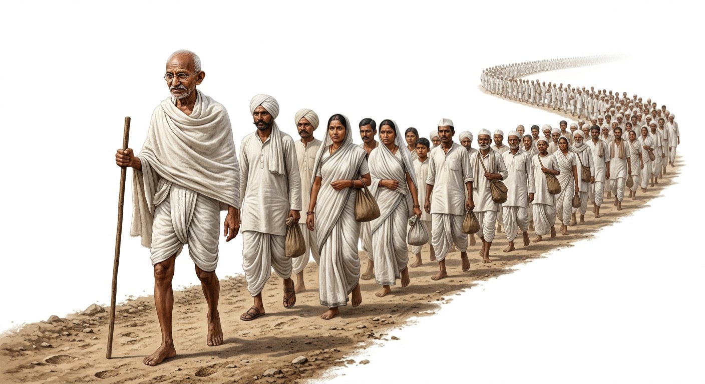
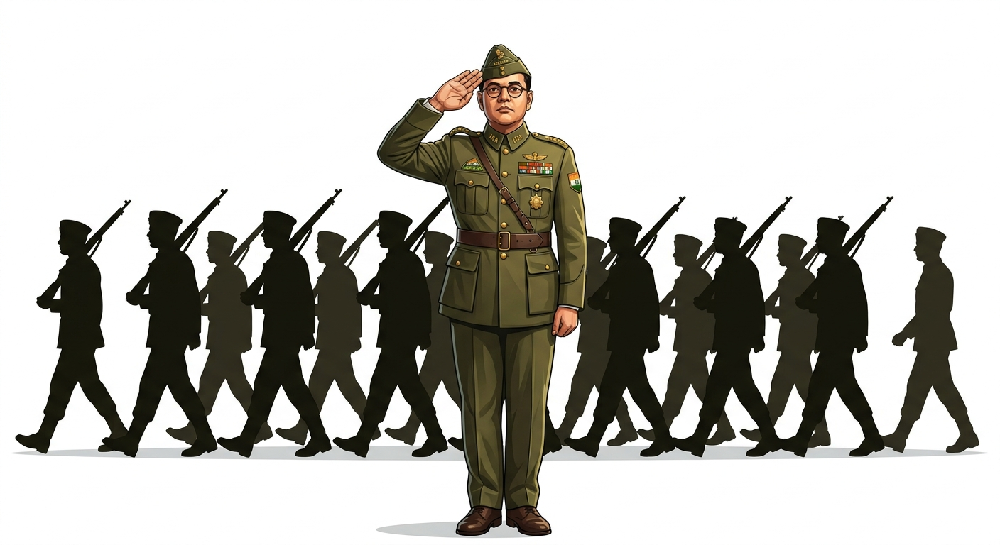

After Queen Victoria’s Proclamation in 1858, the British government took direct control of India. However, Indians still had no voice in the formulation of policies. To express these problems, the Indian National Congress (INC) was formed in December 1885.
Founders: It was formed by A. O. Hume, a retired British official, supported by 72 educated Indian delegates.
First Meeting: Held in Bombay under the presidentship of W. C. Bonnerjee.
The Moderates (1885-1905): The early phase was dominated by leaders who had faith in British justice. Prominent Moderates included Gopal Krishna Gokhale, Dadabhai Naoroji, Surendra Nath Banerjee, and Pheroz Shah Mehta.
Methods: They followed a policy of 3Ps: Prayer, Petition, and Protest.
Demands: Representative institutions, Indian recruitment for higher administrative positions, holding Civil Services exams in India, and stopping the drain of wealth to Britain.
2. Partition of Bengal & Rise of Radicals
To weaken the growing National Movement and Hindu-Muslim unity, the British resorted to the 'Divide and Rule' policy.
The Partition (1905):Lord Curzon issued an order to partition Bengal. The official reason was administrative convenience, but the real motive was to divide Indians.
The Reaction: The day was observed as the Day of Mourning. It triggered the Swadeshi (use of Indian goods) and Boycott (rejection of foreign goods) movements.
The Radicals (Extremists): Leaders disgusted by British callousness believed in action, protests, and hartals rather than petitions. They were led by Lala Lajpat Rai, Bal Gangadhar Tilak, and Bipin Chandra Pal (famously known as Lal, Bal, Pal) along with Aurobindo Ghosh.
The Split (1907): Differences between Moderates and Radicals led to a split in the Congress at the Surat Session in 1907.
ConceptSwaraj:
During the Calcutta session of 1906, Dadabhai Naoroji gave the call for the attainment of 'Swaraj' meaning self-government. Bal Gangadhar Tilak gave the famous slogan: "Swaraj is my birth right and I shall have it!"

Figure 1: Patriotic bonfire of British goods during the Swadeshi Movement (1905)
3. Key Political Reforms and Pacts
As the struggle intensified, several political groups and reforms emerged:
Muslim League (1906): Encouraged by the British to divide Indians, Aga Khan and Nawab Salimulla of Dhaka formed the Muslim League.
Morley-Minto Reforms (1909): Aimed to pacify the Moderates but granted separate electorates to Muslims, further threatening Hindu-Muslim unity.
Home Rule League (1916): Established by Mrs. Annie Besant (in Madras) and Bal Gangadhar Tilak (in Maharashtra) to demand self-government.
Lucknow Pact (1916): The Moderates and Radicals reunited. Furthermore, the Congress and the Muslim League signed a joint pact demanding self-rule for India.
4. The Arrival of Mahatma Gandhi
After the First World War, Mohandas Karamchand Gandhi took leadership, completely transforming the National Movement.
Satyagraha: He introduced this technique of non-violent resistance (demand for truth and ahimsa).
Early Success: His first movement supported indigo peasants in Champaran, Bihar (1917).
The Rowlatt Act & Jallianwala Bagh (1919)
To suppress the growing unrest, the British passed the Rowlatt Act (1919). It empowered the government to arrest anyone without a warrant and imprison them without trial. It was fiercely opposed.
People had gathered peacefully in Amritsar on Baisakhi to protest the arrest of leaders Dr. Satya Pal and Saiffudin Kitchlew. General Dyer ordered British armed forces to open fire on the unarmed crowd, massacring hundreds of innocent men, women, and children. This stunned the nation.
Non-Cooperation Movement (1920-1922)
Gandhiji declared that British rule survived only because of Indian cooperation. The movement included renouncing titles, boycotting schools, courts, and foreign goods. However, in 1922, at Chauri Chaura (UP), an angry mob burnt 22 policemen alive. Shocked by the violence, Gandhiji abruptly called off the movement.
FactThe Khilafat Movement: Started by the Ali brothers (Muhammad Ali and Shaukat Ali) to undo injustices against Muslims in Turkey after WWI. Under Gandhiji's leadership, it was merged with the Non-Cooperation Movement to foster Hindu-Muslim unity.
5. Towards Purna Swaraj & Civil Disobedience
Simon Commission (1927): Sent to review reforms, it was boycotted with black flags because it had no Indian representatives. Lala Lajpat Rai succumbed to injuries sustained in a police lathi charge while protesting it.
Lahore Session (1929): Under the presidency of Jawaharlal Nehru, Congress passed the historic resolution for Purna Swaraj (Complete Independence). It was decided to celebrate January 26, 1930, as the first Independence Day.
Civil Disobedience Movement (1930-1934): Began with the historic Dandi March (March 12, 1930). Gandhiji and 78 supporters marched to Dandi to break the unjust British salt laws. It became a massive movement involving boycotts and tax refusals. In the North-West, it was led by Abdul Gaffar Khan (Frontier Gandhi).

Figure 2: Mahatma Gandhi leading the historic Dandi March to defy the British salt laws in 1930
6. Revolutionary Movements
Many young Indians, frustrated by the slow pace of non-violence and the withdrawal of the Non-Cooperation Movement, turned to revolutionary activities.
Kakori Train Robbery: Executed by members of the Hindustani Socialist Republican Association (HSRA) like Ramprasad Bismil and Chandrashekhar Azad to buy weapons.
Assassination of Sanders: Bhagat Singh, Azad, and Rajguru assassinated the police officer responsible for Lala Lajpat Rai's death.
Assembly Bombing:Bhagat Singh and Batukeshwar Datt threw a bomb in the Central Legislative Assembly to protest unjust laws. Bhagat Singh, Sukhdev, and Rajguru were hanged in Lahore in 1931.
7. The Final Phase & Independence
Government of India Act (1935): Introduced limited autonomy, but the Supreme power remained with the British Governor-General. Both Congress and Muslim League rejected it.
Quit India Movement (1942): After the failure of the Cripps Mission, Gandhiji gave the final blow to the British on August 8, 1942. He gave the mantra "Do or Die". The British retaliated with brutal terror and mass arrests.
Netaji Subhash Chandra Bose
Bose believed in armed struggle. He gave the slogan, "You give me blood and I will give you freedom." He escaped British detention, went abroad, and took charge of the Indian National Army (INA) (initially organized by Mohan Singh) to overthrow the British militarily.

Figure 3: Netaji Subhash Chandra Bose, whose INA challenge seriously threatened British control
Independence and Partition (1947)
After WWII, the British Labour Party (under PM Attlee) agreed to grant freedom. The Cabinet Mission (1946) proposed an Interim Government, but the Muslim League demanded a separate nation (Pakistan).
Lord Mountbatten presented the partition plan. Despite strong opposition from Gandhiji and others, the widespread communal riots left no choice but to accept the partition. Thus, India achieved its hard-fought independence in 1947.